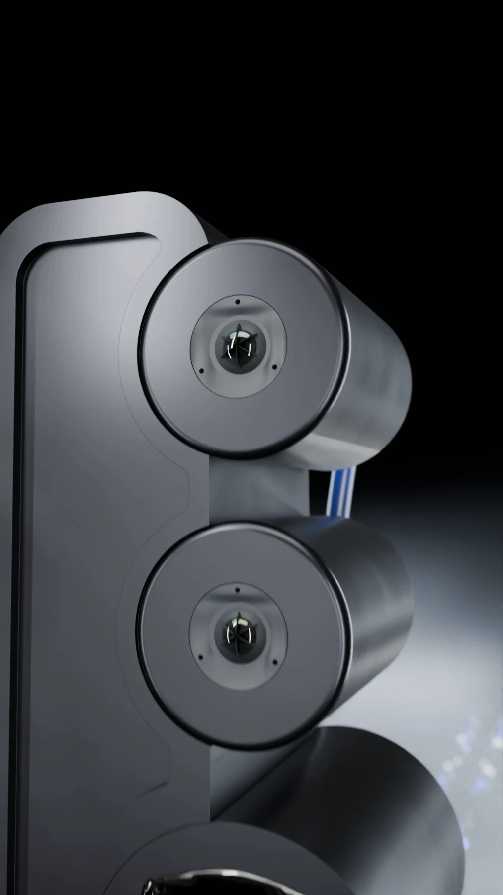
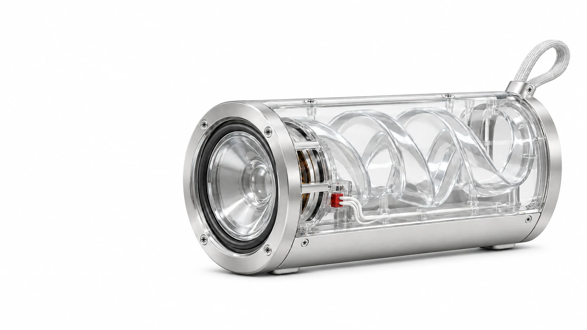
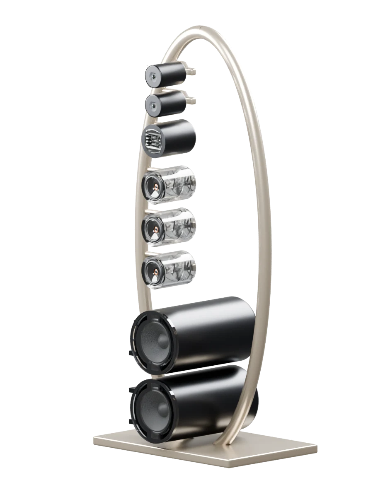

RYTHO HYPE
體驗路線 ＋ 色彩
草稿 · 2026-11-23 · 給 SAN 確認敘事順序與配色，確認後再做完整互動網站。
參考：Janis Sne Figure 03（影片推進、01–07 編號＋「+」分段、白／灰／黑）＋ Apple liquid glass ＋ Rytho 科技色。
COLOR · RYTHO × OPQ
比例：約 70% 黑、20% 藍紫靛流光、8% 冰白文字與高光、2% 螢光綠點綴（句點、游標、少量粒子、啟動狀態）。青綠只用在漸層過渡。紫＝AI／Wi-Fi。
OPQ 粒子波形 · 貫穿全站的主線（2026-09 OPQ 粒子海報 × Solwy 流光，綠色只點綴）
Sound takes
shape.
海報裡那條「物件 → 粒子 → 波形」的粒子帶，做成一條橫跨全站的 canvas。它跟著滾動前進：開場是一條細線，進入炸開段時粒子散開，到 01–04 時重新聚成波形；進入 AI 段（02–04）顏色會往紫靛偏移。混合方式：OPQ 粒子帶疊在 Solwy 的模糊流光上；主色是黑、冰白和藍紫，綠色只用在約 1.5% 的粒子、句點和互動高亮。字體是 Solwy 式的緊排大字，搭配小段內文；頁眉格式沿用 OPQ 海報的「NN / 標題」和細分隔線。
LIQUID GLASS KIT · RYTHO 色（依 3 張 Pinterest 參考）
參考 1 的 Siri 式玻璃膠囊：內部折射光改成 綠→青→紫，當 AI 喚醒的視覺。參考 2 的灰石板厚斜邊按鈕：拿來做導覽和 A／B／C 切換。參考 3 的發光搜尋列：當 AI 對話和 CTA。整站改成深色。
舊版示意（淺色，已不採用）
Bluetooth · 螺旋全透明聲學腔
語音助理 · 串流 · 多房間
NARRATIVE · 滾動順序
主影片（全螢幕開場）
一打開就是主影片靜音自動播放，只壓一行 RYTHO HYPE。往下滑，影片縮成玻璃卡退後。
黑底影片製作中 · 先放 39 秒片
玻音先創 · 透明振膜
一句話逐字亮起：「讓聲音的源頭，第一次被看見。」透明振膜特寫 + 綠色光暈。
綠光
整塔炸開（主要互動）
畫面固定，滾動推動原模型爆炸序列：主體後退、八組單體前移拉開，標註逐一點亮；接著碎片分成 4 組，飛向 01–04。
原模型渲染中sticky + scroll scrub
隨身 · Bluetooth
螺旋狀全透明聲學音響。純藍芽、可攜，系列入口。
冷白底BluetoothAI 概念圖（無 CAD）
家用 AI · 上半段兩節
原上段直接獨立加底座。內建 Wi-Fi 晶片 → 開啟 AI。
AI · Wi-Fi原模型渲染
家用 AI · 單顆＋底座
一顆透明模組＋同軸高音＋底座。Wi-Fi → AI。
AI · Wi-Fi原模型渲染整組高訂 · 主體可訂製
碎片合回整塔、轉黑底。單體配置不變，主體造型／顏色可訂製：外環、分枝、折板＋色彩切換。Wi-Fi → AI。
AI · Wi-Fi顏色切換互動
合作 ＋ CTA
玻音先創 × OPQ × 研發方，三行分工；發展順序四步；聯絡。
極簡